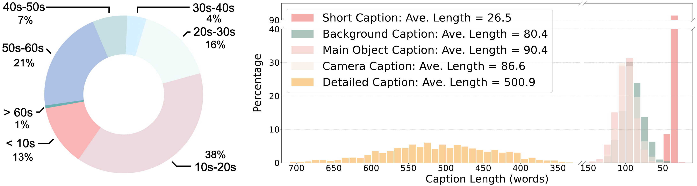
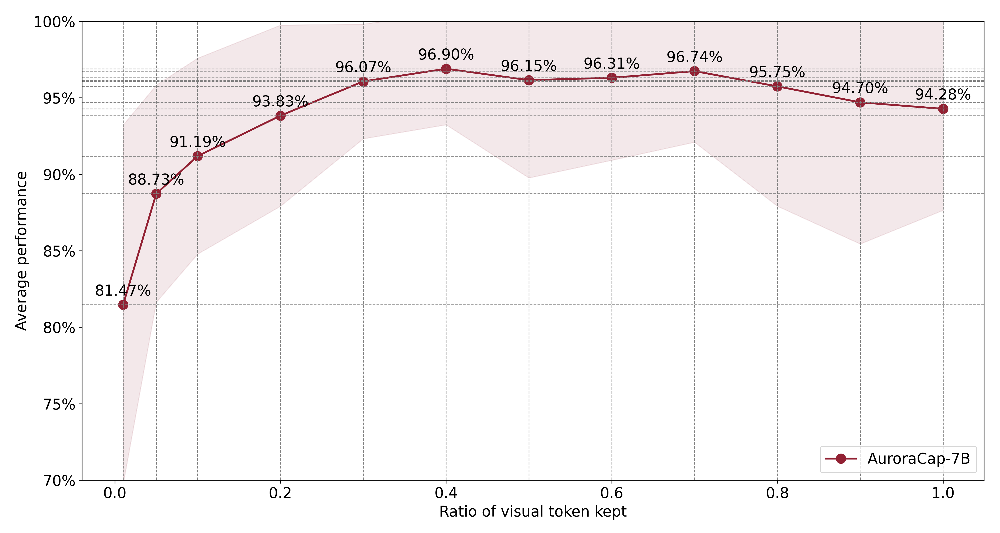
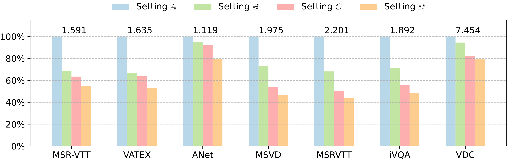

Model: we illustrate how we can reduce the number of tokens used for image or video input before injecting into LLM with marginal performance drop. Using these insights, we propose AuroraCap, which is shown to be the state-of-the-art video captioning model.
Benchmark: we present VDC, the first benchmark for detailed video captioning, featuring over one thousand videos with significantly longer and more detailed captions. We comprehensively evaluate proprietary and open-source models using our proposed VDCscore metric.
We propose AuroraCap, a simple video captioner based on large multimodal model.
We follow the simplest architecture design without additional parameters for temporal modeling.
To address the overhead caused by lengthy video sequences, we implement the token merging strategy, reducing the number of visual tokens input.
We present VDC, a video detailed captioning benchmark with over one thousand carefully annotated structured captions.
In addition, we propose a new LLM-assisted metric VDCscore for bettering evaluation.
We adopt a divide-and-conquer strategy to transform the evaluation of long captions into multiple short question-answering pairs.
AuroraCap: A Efficient and Performant Video Detailed Captioner
Architecture
LLaVA.
To effectively leverage the capabilities of both the pre-trained LLM and visual model, LLaVA adapt a simple multilayer perceptron (MLP) projection layer to connect each patch tokens of image features into the word embedding space.
Token merging.
To increase the throughput of existing ViT models, Token Merging is proposed to gradually combines similar tokens in a transformer to reduce the number of tokens passing through ViT models.
Token Merging has been proven to be effective on image and video classification tasks even without the need for training.
We conduct frame-wise token merging in AuroraCap, where the feature is extracted by CLIP ViT-H model.
We show token merging visualization examples from COCO, VG, SA-1B as follows:
Token merging visualization. From left to right, the number of visual tokens representing the images are 490, 154, 18, and 6.
Training Recipe
We use over 20 million high-quality image/video-text pairs to train AuroraCap in three stages. The training datasets are released at HuggingFace.
Pretraining stage.
We first align visual features with the word embedding space of LLMs.
To achieve this, we freeze the pretrained ViT and LLM, training solely the vision-language connector.
Vision stage.
We unfreeze the pretrained ViT while freezing the LLM during vision stage and train with the public data among various computer vision tasks to get better generalization.
Language stage.
Finally, we conduct end-to-end training, which means all the components are trainable, with the most high-quality public data during language stage.
VDC: A New Video Detailed Captioning Benchmark
Dataset
Theme
# Video
# Clip
# Caption
# Word
# Vocab.
Ave. Length
MSVD
Open
1,970
1,970
70,028
607,339
13,010
8.67
MSR-VTT
Open
7,180
10,000
200,000
1,856,523
29,316
9.28
ActivityNet
Open
20,000
100,000
100,000
1,340,000
15,564
13.40
S-MiT
Open
515,912
515,912
515,912
5,618,064
50,570
10.89
M-VAD
Movie
92
48,986
55,905
519,933
18,269
9.30
MPII-MD
Movie
94
68,337
68,375
653,467
24,549
9.56
Youcook2
Cooking
2,000
15,400
15,400
121,418
2,583
7.88
Charades
Human
9,848
10,000
27,380
607,339
13,000
22.18
VATEX
Open
41,300
41,300
413,000
4,994,768
44,103
12.09
VDC (ours)
Open
1,027
1,027
1,027
515,441
20,419
500.91
Benchmark comparison for video captioning task. Ave. Length indicates the average number of words per caption.
Benchmark Collection and Processing
Video collection and processing.
We building VDC upon Panda-70M, Ego4D, Mixkit, Pixabay, and Pexels.
We first split the video into clips and apply dense frame extraction, then manually replacing blurry frames with adjacent clear ones.
Structured detailed captions construction pipeline.
We develop a structured detailed captions construction pipeline to generate extra detailed descriptions from various perspectives, significantly extending the length and enhancing the richness compared to previous benchmarks.
The structured detailed captions includes the following categories:
Camera caption.
Describe the camera work in detail, including shot types, angles, movements, transitions, and any special effects used to enhance the video.
Short caption.
Summarize the video in one detailed sentence, capturing key actions and the overall mood.
Background caption.
Provide a detailed description of the background, including objects, location, weather, time, and any dynamic elements.
Main Object caption.
Give a thorough description of the main subject's actions, attributes, interactions, and movements throughout the video frames.
Detailed caption.
Generate a detailed, vivid caption for the video, covering all categories, ensuring it's engaging, informative, and rich enough for AI to recreate the video content.
To generate detailed, fine-grained, and accurate captions, we leverage GPT-4o to produce video descriptions.
We design a hierarchical prompt strategy to efficiently obtain accurate structured captions and detailed captions in two conversation rounds: (1) Structured Captions Generation and (2) Detailed Captions Integration.

Distribution of the video length and structured caption length in VDC.
Evaluation Metric Design and Leaderboard
VDCscore: Evaluating Detailed Captions with LLMs
We introduce VDCscore, a novel quantitative metric that utilizes LLMs to evaluate the similarity between predicted and ground-truth detailed captions through a divide-and-conquer approach.
The core idea of VDCscore is to decompose long detailed captions into multiple short question-answering pairs, avergae the evaluation of each pair as the final result.
VDCscore evaluation pipeline.
Benchmark Examples
Evaluation
Benchmarking video detailed captioning.
AuroraCap achieves superior performance in video detailed captioning while utilizing significantly fewer visual tokens than other models, fully highlighting the efficiency of AuroraCap.
Comparison between various models with different number of visual tokens input on VDC.
We present a quantitative comparison between AuroraCap with existing state-of-the-art large multimodal models across various sections of structured captions in VDC.
Model
Ave.VDC
Camera
Short
BG
Object
Detailed
Gemini-1.5 Pro
41.73
38.68
35.71
43.84
47.32
43.11
AuroraCap-7B
38.21
43.50
32.07
35.92
39.02
41.30
InternVL-2-8B
37.72
39.08
33.02
37.47
44.16
34.89
LLAVA-OV-7B
37.45
37.82
32.58
37.43
38.21
41.20
ShareGPT4Video-8B
36.17
33.28
39.05
35.77
37.12
35.62
LLAVA-1.6-13B
35.85
35.61
31.90
38.90
36.65
36.18
LLAVA-1.6-7B
35.70
36.50
31.91
37.58
36.03
36.47
LLAVA-NeXT-V7B
35.46
39.73
30.63
36.54
36.54
33.84
LLAVA-1.5-13B
34.78
38.97
30.89
34.79
36.27
33.00
LongVA-7B
34.50
35.32
31.94
36.39
40.95
27.91
LLAVA-1.5-7B
33.98
38.38
28.61
34.86
34.62
33.43
Video-LLAVA-7B
32.80
37.48
30.67
32.50
36.01
27.36
VILA-7B
32.61
34.33
30.40
35.15
33.38
29.78
MovieChat-7B
31.92
37.25
32.55
28.99
31.97
28.82
Video-ChatGPT-7B
31.12
37.46
29.36
33.68
30.47
24.61
LLAMA-VID
30.86
39.47
29.92
28.01
31.24
25.67
Vicuna-v1.5-7B
22.50
21.68
23.06
22.02
22.64
23.09
Llama-3.1-8B
18.98
17.83
17.90
19.52
19.57
20.10
Comparison of AuroraCap with LLM-based baseline methods on VDCscore under zero-shot structured captions setting.
Image captioning.
We evaluate AuroraCap using CIDEr, BELU-4, BELU-1, METEOR, and ROUGE-L metric on Flickr, NoCaps, and COCO-Cap benchmarks and compare it with LLM-based state-of-the-art methods.
AuroraCap shows good performance under zero-shot settings.
Notice that these benchmarks all contain short captions consisting of a single sentence, so they only partially reflect the model's performance.
Model
Flickr (31,784)
NoCaps (4,500)
COCO-Cap (5,000)
C
R
C
R
C
R
LLaVA-1.5-7B
74.9
52.8
105.5
59.4
110.3
55.5
LLaVA-1.5-13B
79.4
53.9
109.2
60.3
115.6
56.5
LLaVA-1.6-7B
68.4
50.3
88.4
54.6
99.9
52.4
LLaVA-1.6-13B
66.6
48.8
88.1
54.9
101.8
52.1
MiniCPM-V-3B
66.8
51.0
89.9
55.8
94.2
52.3
DeCap
56.7
—
42.7
—
91.2
—
Flamingo-80B
67.2
—
—
—
84.3
—
Chameleon-34B
74.72
—
—
—
120.22
—
GPT-4V
55.38
—
—
—
78.58
—
Gemini-1.5 Pro
82.24
—
—
—
99.82
—
AuroraCap-7B
88.9
55.4
111.4
60.6
120.8
57.2
Comparison AuroraCap with SoTA methods on image captioning benchmarks under zero-shot setting.
Video captioning.
Although the current video captioning benchmarks are only contains one-sentence captions, to compare with prior work, we similarly evaluate on these benchmarks.
We evaluate AuroraCap on MSR-VTT and VATEX and compare it with other methods.
Model
MSR-VTT (1,000)
VATEX (1,000)
C
B@1
B@4
M
R
C
B@1
B@4
M
R
ZeroCap
9.6
—
2.9
16.3
35.4
—
—
—
—
—
DeCap
18.6
—
14.7
20.4
—
18.7
—
13.1
15.3
—
PaLI-3
21.3
—
—
—
—
—
—
—
—
—
Ma et al.
22.1
—
3.5
17.3
28.7
23.9
—
2.8
14.1
23.5
LLaVA-7B
16.9
—
—
—
—
—
—
—
—
—
Video-LLAMA
2.3
—
4.9
16.8
—
3.8
—
4.3
16.3
21.8
AuroraCap-7B
33.1
58.6
21.0
23.9
49.5
33.8
57.1
18.4
19.0
40.8
Comparison AuroraCap with SoTA methods on existing video captioning benchmarks under zero-shot setting.
Ablation Study
As a core training and inference strategy of AuroraCap, token merging plays a significant role in reducing the number of visual tokens.
We further study how the video detailed captioning capability is influenced by token merge ratio.

Visualization of token merging ratio on various image and video understanding tasks.
The solid line indicates the average performance across various tasks, and the shaded area represents performance variability.
We define the performance percentage as the proportion between the highest and lowest values on the entire performance curve.
We highlight the token merging ratio when achieving 90% and 80% performance with the dash line and filled area.
We found that token merging significantly reduces the number of tokens while maintaining minimal performance drop, and even showing improvement in some tasks.
Ablation study on token merging ratio on various image and video understanding tasks.
To assess the inference speed, we utilize the inference time per video question-answering pair in seconds (TPV) as an evaluative metric.
Figure below indicates the minimum TPV achievable in our settings including with or without token merging and SGLang across seven video understanding datasets.
Reducing the visual tokens and using SGLang result in excellent inference times per video question-answering pair while all the datasets with short video and question inputs.

Comparison between different inference settings:
A: Rvtk = 1.0, without SGLang,
B: Rvtk = 0.1, without SGLang,
C: Rvtk = 1.0, with SGLang,
D: Rvtk = 0.1, with SGLang.
The number indicates the maximum inference time in seconds for each benchmark.
Case Study
We perform an extensive case study of AuroraCap on a variety of videos for video detailed captioning.
As shown as followings, AuroraCap is capable of providing excellent detailed captions regarding the camera motion, background and main object with less hallucination.
BibTeX
@article{auroracap,
title={AuroraCap: Efficient, Performant Video Detailed Captioning and a New Benchmark},
author={Wenhao Chai, Enxin Song, Yilun Du, Chenlin Meng, Vashisht Madhavan, Omer Bar-Tal, Jeng-Neng Hwang, Saining Xie, Christopher D. Manning},
year={2024},
journal={arXiv preprint arXiv:2410.03051},
}